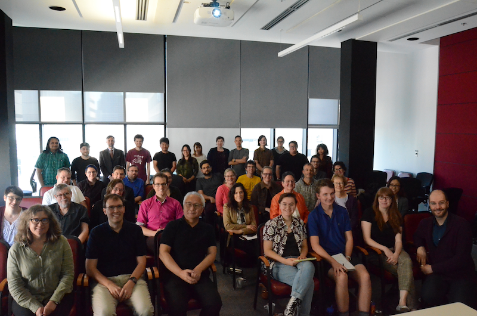
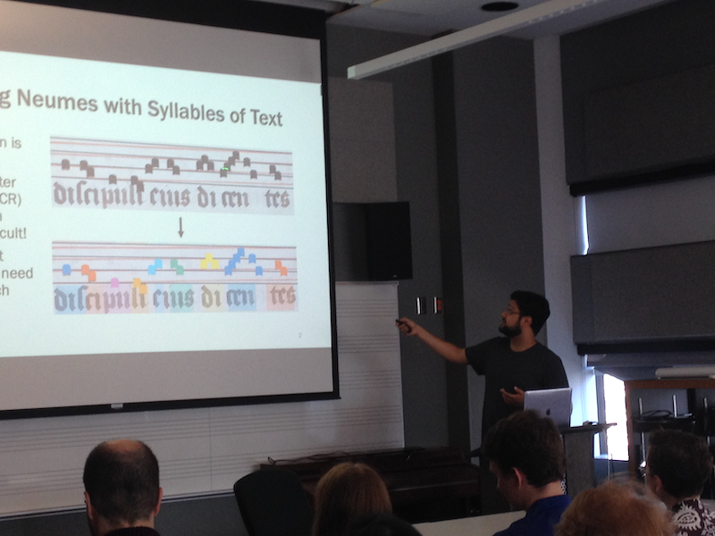

SIMSSA XIX: Introducing DACT and MML16
Posted by ehopkins on December 11, 2019
On 21 September 2019, we had our 19th SIMSSA workshop, this time here at McGill in collaboration with CIRMMT. This weekend coincided with a workshop for Julie Cumming’s new SSHRC Grant, Mapping the Musical Landscape of the 16th Century (MML16), as well as Jennifer Bain’s new partnership grant, Digital Analysis of Chant Transmission (DACT). Scholars involved in all three projects were here for a few days to make plans and exchange ideas, and the SIMSSA Workshop had around 45 attendees.

Ichiro Fujinaga: Welcome & Introduction
As always, Ich started the day with an overview of recent SIMSSA highlights, including workshops and other major projects.
(Slides:
Keynote
and PDF)
Jennifer Bain: The Digital Analysis of Chant Transmission (DACT)
Jennifer presented on her new SSHRC Partnership DACT! Now that Cantus Ultimus has ended, we’re excited to see where this new venture goes.
(Slides:
PDF and Powerpoint)
Rebecca Shaw: The Differentiae Database
Rebecca Shaw presented on recent work she has done the Differentiae Database, which she originally presented at DLfM in 2018 (blog post)[https://simssa.ca/blog/DLfM-becky-shaw/.
(Slides:
PDF
and Powerpoint)
Néstor Nápoles López: Cantus Ultimus: Status Update
Néstor has been helping with updates to the Cantus Ultimus site, helping improve the site infrastructure and working towards improving the infrastructure for manuscript upload.
(Slides:
PDF)
Evan Savage: Neume Component Pitch and Type Classification
Evan breaks down the process for breaking neumes into components to identify their types and pitches.
(Slides:
PDF
and Powerpoint)
Tim de Reuse: Text-to-Image Alignment on Chant Manuscripts
Tim de Reuse has been working on aligning chant manuscript images with transcribed text using a combination of OCR and a sequence alignment algorithm developed for working with DNA.
(Slides:
PDF and Powerpoint)

Juliette Regimbal & Caitlin Hutnyk: Neon: Full Manuscripts, Lyrics and Staves
Juliette and Caitlin presented their progress on Neon, our online Neume Editing tool. They welcome feedback from users – try Neon! Caitlin was one of our new student hires from summer of 2019.
(Slides:
PDF)
Imane Chafi: Cress: MEI Mapping Tool
Imane was another one of our new summer 2019 student lab workers, and her main project was developing a tool for mapping individual researchers’ spreadsheets with neume labels on to the correct MEI representation, and making it easier to share these labels.
(Slides:
Prezi)
Alex Daigle: Rodan 2019
Alex has been working on updating our main workflow engine, Rodan.
(Slides:
PDF
and Powerpoint)
Julie Cumming: Introducing MML16: Mapping the Musical Landscape of the 16th Century
MML16 is Julie Cumming’s new SSHRC Insight grant, bringing together print and manuscript sources, online databases, and new ways of exploring the movement of music throughout this century.
(Slides:
PDF
and Powerpoint)
Martha Thomae: OMR for Mensural Notation: Looking at a Guatemalan Music Manuscript
Martha’s PhD dissertation involves going taking a choirbook manuscript in Guatemala through the digitization process all the way to an MEI score. She started by travelling to Guatemala and digitizing it herself and has now moved on to working on the technology required to do OMR for mensural notation.
(Slides:
PDF
and Powerpoint)
Yaolong Ju (& Sam Howes): Chord Progressions in Lutheran Chorales
As part of his work on harmonic analysis and chord labelling, Yaolong has been working with Sam on looking at chord progressions in chorales.
(Slides:
PDF
and Powerpoint)
Emily Hopkins: SIMSSA DB: Symbolic Music Discovery and Search
Emily is part of the team working on the SIMSSA DB. She provided an overview of some of the key factors involved in modelling music for the DB and also making sure our data is available long-term.
(Slides:
PDF
and Powerpoint)
David Garfinkle: PatternFinder: Symbolic Music Retrieval
David provided an overview of the latest updates on his symbolic music search tool, including outlining future plans to integrate with the SIMSSA DB.
(Slides:
PDF
and Powerpoint)
Julie Cumming, Cory McKay, Néstor Nápoles López, and Sylvain Margot: Contrapuntal Style: Pierre de la Rue vs. Josquin Des Prez
This large team of researchers presented on their corpus study looking at differences in style between La Rue and Josquin, outlining various approaches.
(Slides:
PDF and Powerpoint)
Cory McKay (on behalf of Rían Adamian): jSymbolic in 2019: Updates and Improvements
Rían was also one of our summer students, working for Cory McKay on further developments for jSymbolic.
(Slides:
PDF and Powerpoint)
Thank you to all of our guests, presenters, and those who helped organize and set up!